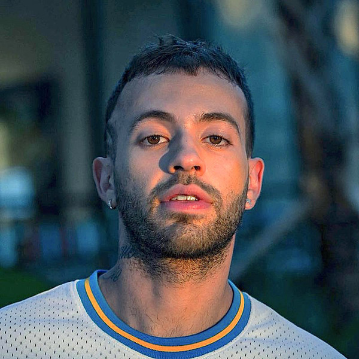

FEID

Bienvenidos a mi sitio de FEID
En el 2016 firmó un contrato con la discografía Universal Music.1415 Posteriormente estreno el sencillo «Que raro» con la colaboración de J Balvin, siendo el primero bajo este sello que alcanzó la posición 47 en el Hot Latin Songs
ㅤ
Haz click en el link para ver bibliografia de FEID el FERXXO. Link